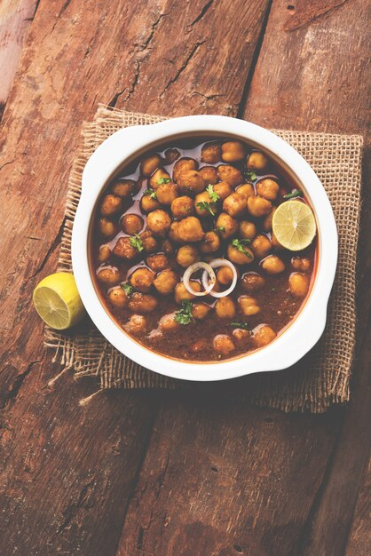
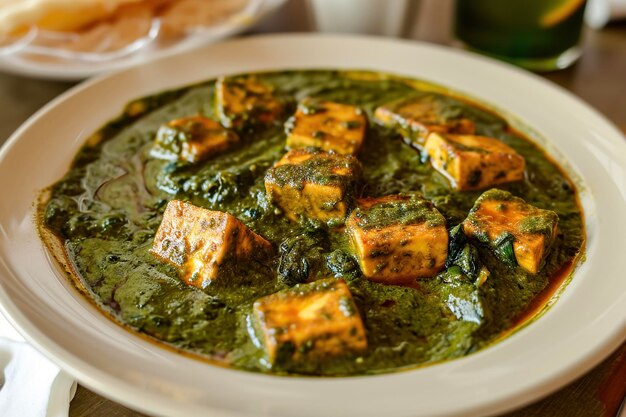

Butter Chicken Curry
A creamy and flavorful chicken curry made with marinated chicken cooked in a rich tomato-based sauce.

Ingredients:
- 500g boneless chicken, cut into pieces
- 1 cup yogurt
- 2 tbsp lemon juice
- 2 tbsp ginger-garlic paste
- 1 tsp turmeric powder
- 1 tsp red chili powder
- 2 tbsp vegetable oil
- 2 onions, finely chopped
- 2 tomatoes, pureed
- 1 cup heavy cream
- 2 tbsp butter
- 1 tsp garam masala
- Salt to taste
- Fresh cilantro for garnish
Instructions:
- In a bowl, mix yogurt, lemon juice, ginger-garlic paste, turmeric powder, red chili powder, and salt. Add the chicken pieces and marinate for at least 1 hour.
- Heat oil in a pan and sauté the onions until golden brown.
- Add the marinated chicken and cook until it's no longer pink.
- Add the tomato puree and cook for 10 minutes.
- Stir in the heavy cream, butter, and garam masala. Cook for another 10 minutes until the sauce thickens.
- Garnish with fresh cilantro and serve hot with naan or rice.
Paneer Tikka Masala
A vegetarian curry made with grilled paneer cubes cooked in a spicy and creamy tomato-based sauce.

Ingredients:
- 200 grams paneer, cubed
- 1 cup yogurt
- 2 tablespoons tandoori masala
- 1 tablespoon lemon juice
- 2 tablespoons vegetable oil
- 1 onion, finely chopped
- 2 garlic cloves, minced
- 1 teaspoon ginger paste
- 1 cup tomato puree
- 1/2 cup heavy cream
- 1 teaspoon garam masala
- Salt to taste
- Fresh cilantro for garnish
Instructions:
- In a bowl, mix the yogurt, tandoori masala, lemon juice, and a pinch of salt. Add the paneer cubes and marinate for at least 30 minutes.
- Heat oil in a pan and sauté the marinated paneer until golden brown. Remove and set aside.
- In the same pan, add more oil if needed and sauté the onions until translucent.
- Add the garlic and ginger paste, and cook for another minute.
- Stir in the tomato puree and cook for about 10 minutes, stirring occasionally.
- Add the heavy cream and garam masala. Mix well and let it simmer until the sauce thickens.
- Add the sautéed paneer and cook for a few more minutes.
- Garnish with fresh cilantro and serve hot with naan or rice.
Chana Masala
A flavorful chickpea curry cooked with onions, tomatoes, and aromatic spices.
Ingredients:
- 2 cups cooked chickpeas
- 2 tablespoons vegetable oil
- 1 onion, finely chopped
- 2 garlic cloves, minced
- 1 teaspoon ginger paste
- 2 tomatoes, chopped
- 1 teaspoon cumin seeds
- 1 teaspoon turmeric powder
- 1 teaspoon coriander powder
- 1 teaspoon garam masala
- 1 teaspoon chili powder
- Salt to taste
- Fresh cilantro for garnish
Instructions:
- Heat oil in a pan and add cumin seeds. Let them splutter.
- Add the chopped onions and sauté until golden brown.
- Add the garlic and ginger paste, and cook for another minute.
- Add the chopped tomatoes, turmeric powder, coriander powder, garam masala, chili powder, and salt. Cook until the tomatoes soften and the oil separates from the masala.
- Add the cooked chickpeas and mix well. Cook for about 10 minutes, stirring occasionally.
- Garnish with fresh cilantro and serve hot with rice or bread.
Palak Paneer Masala
A classic Indian curry made with spinach and paneer (Indian cottage cheese) cooked in a creamy and flavorful sauce.
Ingredients:
- 200 grams paneer, cubed
- 4 cups fresh spinach leaves, washed and chopped
- 2 tablespoons vegetable oil
- 1 onion, finely chopped
- 2 garlic cloves, minced
- 1 teaspoon ginger paste
- 2 tomatoes, chopped
- 1 teaspoon cumin seeds
- 1 teaspoon turmeric powder
- 1 teaspoon coriander powder
- 1 teaspoon garam masala
- 1/2 cup heavy cream
- Salt to taste
- Fresh cilantro for garnish
Instructions:
- Blanch the spinach leaves in boiling water for 2-3 minutes. Drain and blend into a smooth puree.
- Heat oil in a pan and add cumin seeds. Let them splutter.
- Add the chopped onions and sauté until golden brown.
- Add the garlic and ginger paste, and cook for another minute.
- Add the chopped tomatoes, turmeric powder, coriander powder, and salt. Cook until the tomatoes soften.
- Stir in the spinach puree and cook for 5 minutes.
- Add the paneer cubes and mix well. Cook for another 5 minutes.
- Add the heavy cream and garam masala. Cook for a few more minutes until the sauce thickens.
- Garnish with fresh cilantro and serve hot with naan or rice.
Rajma Masala
A comforting kidney bean curry cooked with onions, tomatoes, and a blend of aromatic spices.

Ingredients:
- 2 cups cooked kidney beans
- 2 tablespoons vegetable oil
- 1 onion, finely chopped
- 2 garlic cloves, minced
- 1 teaspoon ginger paste
- 2 tomatoes, chopped
- 1 teaspoon cumin seeds
- 1 teaspoon turmeric powder
- 1 teaspoon coriander powder
- 1 teaspoon garam masala
- 1 teaspoon chili powder
- Salt to taste
- Fresh cilantro for garnish
Instructions:
- Heat oil in a pan and add cumin seeds. Let them splutter.
- Add the chopped onions and sauté until golden brown.
- Add the garlic and ginger paste, and cook for another minute.
- Add the chopped tomatoes, turmeric powder, coriander powder, garam masala, chili powder, and salt. Cook until the tomatoes soften and the oil separates from the masala.
- Add the cooked kidney beans and mix well. Cook for about 10 minutes, stirring occasionally.
- Garnish with fresh cilantro and serve hot with rice or bread.
Each of these recipes is bursting with authentic Indian flavors and can be customized to suit your taste preferences. Whether you're a fan of creamy curries or spicy delights, there's something for everyone!
For detailed recipes and cooking instructions, stay tuned for our upcoming blog posts.